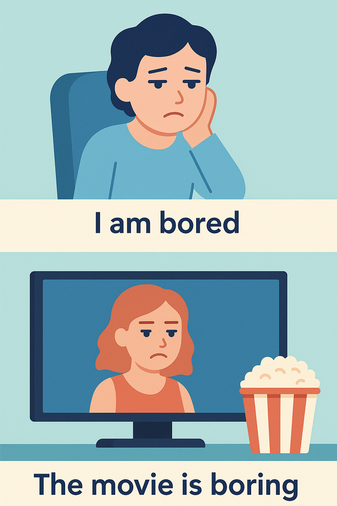

-ED and -ING Adjectives in English – Unit 2, Session 3
Introduction
In English, many adjectives come from verbs and have two forms: one ending in -ED and one ending in -ING. These forms have different meanings, and understanding them will help you describe feelings and situations accurately.
🎧 Complementary Audio – Guided Explanation
This audio supports you as you go through the lesson. Listen to it for a step-by-step explanation with spoken examples. It’s especially helpful if you prefer learning by listening or want to review while doing other tasks.
What’s the Difference?
-ED adjectives describe how someone feels.
-ING adjectives describe the person, thing, or situation that causes the feeling.
Example:
- I am bored. (I feel bored.)
- The movie is boring. (The movie causes boredom.)
-ED Adjectives: Describing Feelings
Use -ED adjectives to talk about emotions or how someone feels. They are often used with verbs like be (am, is, are, was, were), feel, or look.
Examples:
- She is surprised. (She feels surprise.)
- We were exhausted. (We felt very tired.)
- He looks worried. (He seems to feel worry.)
-ING Adjectives: Describing the Cause
Use -ING adjectives to describe the thing, person, or situation that causes the emotion.
Examples:
- The book is interesting. (The book causes interest.)
- The news was shocking. (The news caused shock.)
- This puzzle is confusing. (The puzzle causes confusion.)
Important: They Are NOT Interchangeable!
Using the wrong form can change the meaning of your sentence completely.
| Sentence | Meaning |
|---|---|
| I am interested. | I feel interest. |
| I am interesting. | I cause interest – people think I am fascinating! |
| He is tired. | He feels tired. |
| He is tiring. | He makes others feel tired. |
Watch out! Saying “I am boring” means you think you’re not interesting to others. If you want to say you feel bored, say “I am bored.”
Common -ED and -ING Adjectives
Here are some common verbs that form -ED and -ING adjectives:
| Verb | -ED Adjective | -ING Adjective |
|---|---|---|
| interest | interested | interesting |
| bore | bored | boring |
| surprise | surprised | surprising |
| confuse | confused | confusing |
| exhaust | exhausted | exhausting |
| frighten | frightened | frightening |
| disappoint | disappointed | disappointing |
Quick Tips for Choosing the Right Adjective
If you can say “I feel…”, use the -ED adjective:
- I feel relaxed / tired / frustrated.
If you can say “It is…”, use the -ING adjective:
- It is relaxing / tiring / frustrating.
Pro Tip
Practice by describing how you feel (-ED) and what causes it (-ING). For example: “I am excited because the party is exciting!”
✨ Master this grammar to shine in professional communication!